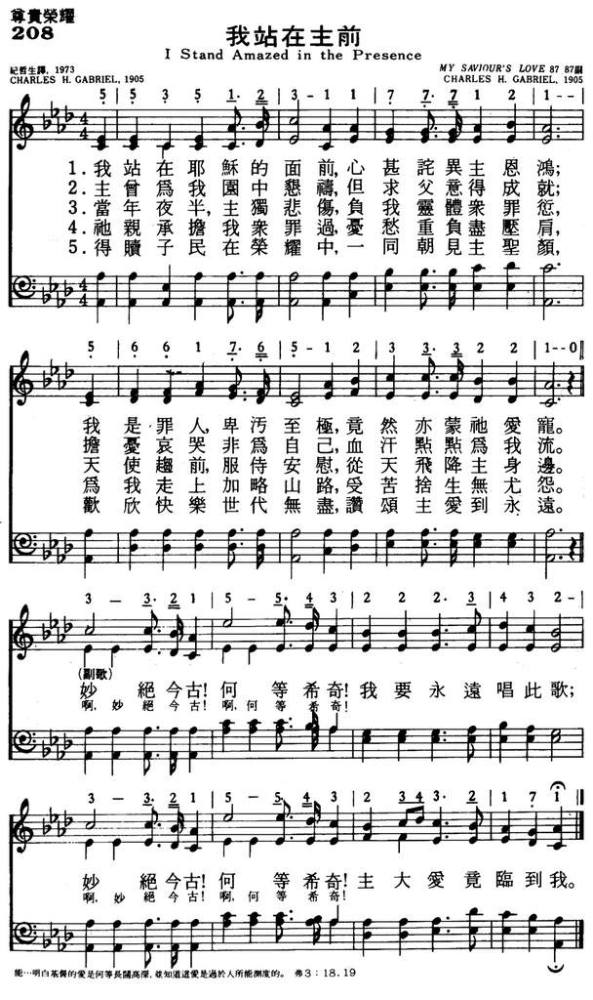

|
|
颂主新歌 |
|
1 I stand amazed in the presence Refrain: 2 For me it was in the garden 3 He took my sins and my sorrows, 4 When with the ransomed in glory |
1.我站在耶稣的面前，心甚诧异主恩鸿，
|
|
https://www.mred365.cn/szxg/7211.html  I Stand Amazed in the Presence
|
|
|
|
|


https://youtu.be/r3XAiXjr6II - Lied: I stand amazed in the presence of Jesus
https://youtu.be/mJiSGqr8hXA - I Stand Amazed in The Presence - Hymn (Lyrics)
https://youtu.be/qlMHXGVfU_4
| Text: | I Stand Amazed in the Presence |
| Author: | Charles H. Gabriel |
| Tune: | MY SAVIOR'S LOVE |
| Composer: | Charles H. Gabriel |
| Short Name: | Chas. H. Gabriel |
| Full Name: | Gabriel, Chas. H. (Charles Hutchinson), 1856-1932 |
| Birth Year: | 1856 |
| Death Year: | 1932 |
Pseudonyms: C. D. Emerson, Charlotte G. Homer, S. B. Jackson, A. W. Lawrence, Jennie Ree

=============
For the first seventeen years of his life Charles Hutchinson Gabriel (b.
Wilton, IA, 1856; d. Los Angeles, CA, 1932) lived on an Iowa farm, where
friends and neighbors often gathered to sing. Gabriel accompanied them on
the family reed organ he had taught himself to play. At the age of sixteen
he began teaching singing in schools (following in his father's footsteps)
and soon was acclaimed as a fine teacher and composer. He moved to
California in 1887 and served as Sunday school music director at the Grace
Methodist Church in San Francisco. After moving to Chicago in 1892, Gabriel
edited numerous collections of anthems, cantatas, and a large number of
songbooks for the Homer Rodeheaver, Hope, and E. O. Excell publishing
companies. He composed hundreds of tunes and texts, at times using
pseudonyms such as Charlotte G. Homer. The total number of his compositions
is estimated at about seven thousand. Gabriel's gospel songs became widely
circulated through the Billy Sunday-Homer Rodeheaver urban crusades.
Bert Polman
Tune Information
| Title: | MY SAVIOR'S LOVE |
| Composer: | Chas. H. Gabriel (1905) |
| Meter: | 8.7.8.7 with refrain |
| Incipit: | 55351 23177 71215 |
| Key: | A♭ Major |
| Copyright: | Public Domain |
History of Hymns: "I Stand Amazed in the Presence"
BY C. MICHAEL HAWN
"I Stand Amazed in the Presence"
Charles H. Gabriel
The United Methodist Hymnal, No. 371
“I stand amazed in the presence
of Jesus the Nazarene,
and wonder how he could love me,
a sinner, condemned unclean.
How marvelous! How wonderful!
and my song shall ever be;
How marvelous! How wonderful!
is my Savior's love to me!”
As a young boy, I saw Sunday evenings in church as a time to sing gospel songs. Among those were songs by Charles Gabriel (1856-1932). They included "Send the Light, the Blessed Gospel Light," "O That Will Be Glory for Me," and "I Stand Amazed in the Presence." Themes of spreading the gospel and heaven abound in Gabriel's songs.
Gabriel grew up on an Iowa farm. He learned music by playing the reed organ in his home. He became one of the most prolific composers of gospel songs of his day. Gabriel's musical activities ranged from teaching in the singing schools that were so popular in the nineteenth and early twentieth centuries, to authoring texts, composing songs, anthems, and cantatas, and editing song collections. He was associated with the leading gospel song publishers of his day, including Homer Rodeheaver, Hope, and E. O. Excell.
Though self-trained, he started leading singing school educational events as a teenager. He worked with Grace Episcopal Methodist Church in San Francisco from 1890-1892, and then moved to Chicago where he worked for Homer Rodeheaver’s publishing firm.
Gabriel is credited with between 7000 and 8000 songs, thirty-five gospel song collections, Sunday school song books, collections for men's and women’s choirs, numerous cantatas, including 41 Christmas cantatas, and music education texts. He wrote under numerous pseudonyms, making it often difficult to know the precise number of songs he wrote.
The words and music of "I Stand Amazed" first appeared in E. O. Excell’s collection, Praises (1905). The Rev. Carlton R. Young, editor of The United Methodist Hymnal, notes: "This song of gratitude and praise for the atoning death of Jesus is a personal and Adventist interpretation of Luke's account of Jesus' sweating blood in the Garden of Gethsemane, a portion of the passion narrative not included in the other Gospels."
Luke 22:41-44 reads, "And he was withdrawn from them about a stone's cast, and kneeled down, and prayed, Saying, Father, if thou be willing, remove this cup from me: nevertheless not my will, but thine, be done. And there appeared an angel unto him from heaven, strengthening him. And being in an agony he prayed more earnestly: and his sweat was as it were great drops of blood falling down to the ground" (KJV).
Stanza two of "I Stand Amazed in the Presence," in particular, recreates
this scene:
For me it was in the garden
he prayed, "Not my will, but thine,"
He had no tears for his own griefs,
but sweat-drops of blood for mine.
The response in the refrain is one of awe:
"How marvelous! How wonderful is my Savior’s love to me!"
Although with not the same poetic skill, Gabriel captures some of the same joy as does Charles Wesley in "And Can It Be that I Should Gain" (UM Hymnal, No. 363) when he says, "Amazing love! How can it be that thou, my God, shouldst die for me?"
The song continues to be reworked for more recent song styles. Contemporary Christian artist Chris Tomlin has a popular version of "I Stand Amazed" that can be easily found on YouTube.
Gabriel is credited with writing tunes for many other texts' writers including Civila Martin's "His Eye Is On the Sparrow" (The Faith We Sing, . 2146), and Ada Habershon's "Will the Circle Be Unbroken?" This song became a bluegrass favorite.
Dr. Hawn is distinguished professor of church music at Perkins School of Theology. He is also director of the seminary's sacred music program.
https://www.umcdiscipleship.org/resources/history-of-hymns-i-stand-amazed-in-the-presence
I stand amazed in the presence hymnologyarchivehymnologyarchive
I. Origins
This hymn is by the prolific gospel composer Charles H. Gabriel (1856–1932), published in three collections in 1905: Praises (Chicago: E.O. Excell, 1905 | Fig. 1), edited by E.O. Excell; Songs of Praise Number Two (Philadelphia: Westminster, 1905), edited by J. Wilbur Chapman and O.F. Pugh; and Revival Hymns (Chicago: Bible Institute, 1905), edited by Daniel B. Towner and Charles M. Alexander. At the time of the hymn’s composition, Gabriel was living in Chicago, working as a professional composer and songbook compiler/editor. He gave a brief account of the hymn in his Personal Memoirs (1918):
Elijah P. Brown, founder of “The Ram’s Horn,” sent me these two lines: “He had no tears for his own griefs / But sweat drops of blood for mine,” saying he believed the theme might suggest words for a song. It did, and “My Savior’s Love,” published in 1905, was the outgrowth. His exact words are a part of the second stanza.
A certain minister of the gospel who now holds a responsible position in his denomination once said to me, “Gabriel, why do you put so much allegory in your hymns? We all know that while the Scripture says, ‘There appeared an angel comforting him,’ it was merely a figure of speech.” Yet we wonder why the church is not more spiritual than it is today![1]
The original version of the hymn had four stanzas and a refrain.
Fig. 1. Praises (Chicago: E.O. Excell, 1905).
In 1910, Gabriel added another stanza, “He took my sins and my sorrows,” inserted as number 4. This five-stanza version was included in Alexander’s Gospel Songs No. 2 (NY: Fleming H. Revell, 1910 | Fig 2), in which the copyright had been purchased by Charles M. Alexander, a music evangelist and songbook compiler.
Fig. 2. Alexander’s Gospel Songs No. 2 (NY: Fleming H. Revell, 1910).
The five-stanza version also appeared in Gabriel’s text-only compilation The Slighted Stranger and Other Poems (Chicago: Rodeheaver, 1915), p. 69. In modern hymnals and songbooks, the third stanza is often omitted.
II. Analysis
In 1915, Gabriel offered this summary of “What constitutes an acceptable and useful gospel song”:
First, the text must be systematically constructed, be spiritual and devotional; it should begin with an immediate declaration of subject, followed by an explication presented in a logical and intelligent manner. There are usually three stanzas of four or more lines each; the corresponding lines in these stanzas must have the same number of syllables, and accentuation be of uniform occurrence. . . .
Next to the text, if not on equal ground with it comes the music. A gospel song will not succeed unless it has melody; especially is this true when applied to music for children and young people, and the more pleasing the melody the better it is liked and the more good it accomplishes. . . .
A subject presents itself, and, as it takes form in the mind a melody comes singing its way with the first stanza; the main thought is always in the chorus, which should become the crowning glory of the song.[2]
Based on his own criteria, the text is devotional in nature, written from the perspective of someone who is humbled by spiritual brokenness and in awe of redeeming love. The answer of how the Savior offered that love is presented in the next three stanzas, first describing Jesus in the Garden of Gethsemane (Matt. 26:36–56; Mark 14:32–52; Luke 22:39–53), quoting part of his prayer, and citing the blood-sweat of Luke 22:44. The third stanza references the angels tending to him in the garden, mentioned only in Luke 22:43. In the fourth stanza, the scene moves to the cross, where Gabriel seems to be alluding to Isaiah 53:4 (“Surely he has borne our griefs and carried our sorrows”). Finally, as with many gospel hymns, the focus shifts heavenward, where Gabriel appealed to Rev. 22: 4 (“And they shall see his face”). Keeping with Gabriel’s commitment to textual uniformity, each stanza has a regular pattern of syllables. The refrain is arguably the “crowning glory” of the song, an exclamation of appreciation and praise.
Baptist scholar Terry York once asserted, “The simplicity of Gabriel’s hymn tunes contributed, in part, to their success. The need for simplicity was acute in both the Sunday School and urban revival meetings.”[3] This hymn tune fits the bill. The melody follows a clear tonal pattern, built over a relatively basic harmonic structure (I, IV, and V). The tune is well crafted; in the stanzas, the melody is somewhat restrained, rising only to the third, but it is allowed to soar higher in the refrain, meeting exclamation with musical height.
by CHRIS FENNER
for Hymnology Archive
30 January 2020
Footnotes:
-
Charles H. Gabriel, Personal Memoirs (Chicago: K.G. Bottorf, 1918), p. 40.
-
Charles H. Gabriel, Gospel Songs and Their Writers (Chicago: Rodeheaver, 1915), pp. 11–13: Archive.org
-
Terry W. York, Charles Hutchinson Gabriel (1856-1932): Composer, Author, and Editor in the Gospel Tradition, dissertation (New Orleans Baptist Theological Seminary, 1985), p. 79.
Related Resources:
Charles H. Gabriel, “My Savior’s Love,” The Slighted Stranger, and Other Poems (Chicago: Rodeheaver, 1915), p. 69: Archive.org
Charles H. Gabriel, Gospel Songs and Their Writers (Chicago: Rodeheaver, 1915), pp. 11–13: Archive.org
Terry W. York, Charles Hutchinson Gabriel (1856–1932): Composer, Author, and Editor in the Gospel Tradition, dissertation (New Orleans Baptist Theological Seminary, 1985).
“I stand amazed in the presence,” Hymnary.org:
https://hymnary.org/text/i_stand_amazed_in_the_presence
I stand amazed in the presence
I. Origins
This hymn is by the prolific gospel composer Charles H. Gabriel (1856–1932), published in three collections in 1905: Praises (Chicago: E.O. Excell, 1905 | Fig. 1), edited by E.O. Excell; Songs of Praise Number Two (Philadelphia: Westminster, 1905), edited by J. Wilbur Chapman and O.F. Pugh; and Revival Hymns (Chicago: Bible Institute, 1905), edited by Daniel B. Towner and Charles M. Alexander. At the time of the hymn’s composition, Gabriel was living in Chicago, working as a professional composer and songbook compiler/editor. He gave a brief account of the hymn in his Personal Memoirs (1918):
Elijah P. Brown, founder of “The Ram’s Horn,” sent me these two lines: “He had no tears for his own griefs / But sweat drops of blood for mine,” saying he believed the theme might suggest words for a song. It did, and “My Savior’s Love,” published in 1905, was the outgrowth. His exact words are a part of the second stanza.
A certain minister of the gospel who now holds a responsible position in his denomination once said to me, “Gabriel, why do you put so much allegory in your hymns? We all know that while the Scripture says, ‘There appeared an angel comforting him,’ it was merely a figure of speech.” Yet we wonder why the church is not more spiritual than it is today![1]
The original version of the hymn had four stanzas and a refrain.
Fig. 1. Praises (Chicago: E.O. Excell, 1905).
In 1910, Gabriel added another stanza, “He took my sins and my sorrows,” inserted as number 4. This five-stanza version was included in Alexander’s Gospel Songs No. 2 (NY: Fleming H. Revell, 1910 | Fig 2), in which the copyright had been purchased by Charles M. Alexander, a music evangelist and songbook compiler.
Fig. 2. Alexander’s Gospel Songs No. 2 (NY: Fleming H. Revell, 1910).
The five-stanza version also appeared in Gabriel’s text-only compilation The Slighted Stranger and Other Poems (Chicago: Rodeheaver, 1915), p. 69. In modern hymnals and songbooks, the third stanza is often omitted.
II. Analysis
In 1915, Gabriel offered this summary of “What constitutes an acceptable and useful gospel song”:
First, the text must be systematically constructed, be spiritual and devotional; it should begin with an immediate declaration of subject, followed by an explication presented in a logical and intelligent manner. There are usually three stanzas of four or more lines each; the corresponding lines in these stanzas must have the same number of syllables, and accentuation be of uniform occurrence. . . .
Next to the text, if not on equal ground with it comes the music. A gospel song will not succeed unless it has melody; especially is this true when applied to music for children and young people, and the more pleasing the melody the better it is liked and the more good it accomplishes. . . .
A subject presents itself, and, as it takes form in the mind a melody comes singing its way with the first stanza; the main thought is always in the chorus, which should become the crowning glory of the song.[2]
Based on his own criteria, the text is devotional in nature, written from the perspective of someone who is humbled by spiritual brokenness and in awe of redeeming love. The answer of how the Savior offered that love is presented in the next three stanzas, first describing Jesus in the Garden of Gethsemane (Matt. 26:36–56; Mark 14:32–52; Luke 22:39–53), quoting part of his prayer, and citing the blood-sweat of Luke 22:44. The third stanza references the angels tending to him in the garden, mentioned only in Luke 22:43. In the fourth stanza, the scene moves to the cross, where Gabriel seems to be alluding to Isaiah 53:4 (“Surely he has borne our griefs and carried our sorrows”). Finally, as with many gospel hymns, the focus shifts heavenward, where Gabriel appealed to Rev. 22: 4 (“And they shall see his face”). Keeping with Gabriel’s commitment to textual uniformity, each stanza has a regular pattern of syllables. The refrain is arguably the “crowning glory” of the song, an exclamation of appreciation and praise.
Baptist scholar Terry York once asserted, “The simplicity of Gabriel’s hymn tunes contributed, in part, to their success. The need for simplicity was acute in both the Sunday School and urban revival meetings.”[3] This hymn tune fits the bill. The melody follows a clear tonal pattern, built over a relatively basic harmonic structure (I, IV, and V). The tune is well crafted; in the stanzas, the melody is somewhat restrained, rising only to the third, but it is allowed to soar higher in the refrain, meeting exclamation with musical height.
by CHRIS FENNER
for Hymnology Archive
30 January 2020
Footnotes:
-
Charles H. Gabriel, Personal Memoirs (Chicago: K.G. Bottorf, 1918), p. 40.
-
Charles H. Gabriel, Gospel Songs and Their Writers (Chicago: Rodeheaver, 1915), pp. 11–13: Archive.org
-
Terry W. York, Charles Hutchinson Gabriel (1856-1932): Composer, Author, and Editor in the Gospel Tradition, dissertation (New Orleans Baptist Theological Seminary, 1985), p. 79.
Related Resources:
Charles H. Gabriel, “My Savior’s Love,” The Slighted Stranger, and Other Poems (Chicago: Rodeheaver, 1915), p. 69: Archive.org
Charles H. Gabriel, Gospel Songs and Their Writers (Chicago: Rodeheaver, 1915), pp. 11–13: Archive.org
Terry W. York, Charles Hutchinson Gabriel (1856–1932): Composer, Author, and Editor in the Gospel Tradition, dissertation (New Orleans Baptist Theological Seminary, 1985).
“I stand amazed in the presence,” Hymnary.org:
https://hymnary.org/text/i_stand_amazed_in_the_presence
https://www.hymnologyarchive.com/i-stand-amazed